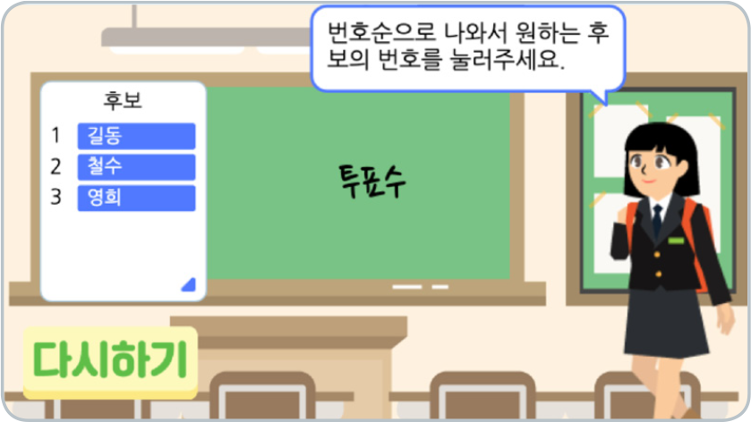
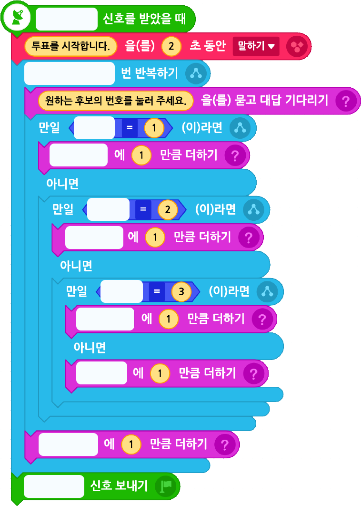

다음 실행 화면을 참고하여 ‘투표 과정’ 프로그램을 완성해 보자.
실행화면

※후보가 세 명일 때를 가정하고 프로그램을 작성한다.
- 오브젝트
-
학생(2)
교실(배경)
투표수(글상자)
다시하기 버튼
- 신호
-
투표 시작
투표 종료
- 변수
-
학급 인원
투표 인원
무효표
1번 후보
2번 후보
3번 후보
- 함수
-
최다 득표자 동점
- 리스트
-
후보
<투표 과정>
원하는 후보에 투표하는 과정 만들기
아래 블록을 참고하여 프로그램을 작성해 보자.
학생(2)

‘투표 인원’ 출력하기
아래 블록을 참고하여 프로그램을 작성해 보자.
투표수
이전
다음